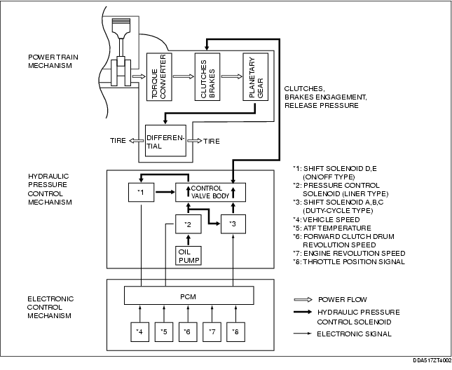

OUTLINE OF OPERATION [FN4A-EL]
id0517a1000400
• The operation of the electronic automatic transaxle is classified into three systems: the electronic control mechanism, the hydraulic pressure control mechanism, and the powertrain mechanism (includes the torque converter mechanism). The operation of each system is as follows:
-
- Electronic control mechanism
-
• According to the signals from the switches and sensors in the input system, the PCM outputs the signal which matches the present driving condition to the linear type solenoid, ON/OFF type solenoids and the duty-cycle type solenoids in the hydraulic pressure control mechanism.
-
- Hydraulic pressure control mechanism
-
• According to the signals from the PCM, each solenoid operates to switch the hydraulic passages in the control valve body and controls the clutch engagement pressure.
-
• The line pressure is adjusted by the linear type pressure control solenoid. The hydraulic passages are switched by the ON/OFF type solenoids (shift solenoids D and E.) And the clutch engagement pressure is controlled by the duty-cycle type solenoids (shift solenoids A, B, and C).
-
- Powertrain mechanism
-
• The driving force from the engine is transmitted through the torque converter to the transaxle.
-
• The transmitted driving force operates each clutch and brake according to the clutch engagement pressure from the duty-cycle type solenoid, and the planetary gears change the gear ratio to the optimal driving force. The changed driving force is transmitted through the differential to the axle shaft and then the tires.
